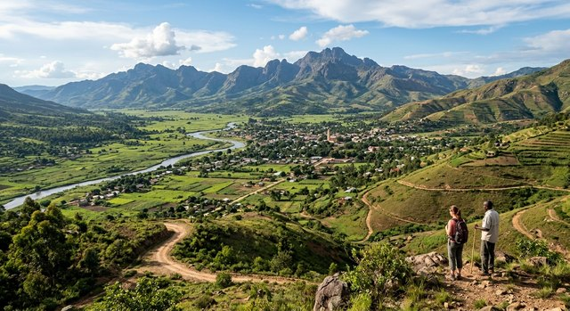

The valley floor between Kembe and Mbuyane, green after the rains and before the flood.
Survey and mapping
This Department maintains the national survey and publishes maps of the territory. Survey coverage is complete for the Buyu valley and the Kembe–Mbuyane corridor. Coverage of the eastern escarpment is partial and the sheets are old. sheets being revised
Available maps
| Sheet | Scale | Availability |
|---|---|---|
| National territory | 1:500 000 | printed sheet |
| Buyu valley and wards | 1:250 000 | printed sheet |
| Kembe–Mbuyane corridor | 1:50 000 | printed sheet |
| Eastern escarpment (partial) | 1:50 000 | printed sheet |
Notes for users of these maps
Distances on the valley sheets are given in kilometres along the road network, not in straight lines. The escarpment sheets predate the 2019 road works and should not be relied upon for vehicle movement.
The Mbuyane flood plain is seasonally inundated and survey markers there are unreliable from November through March. The Kisingo pass road is maintained to light-vehicle standard only and is closed to vehicles over 6 tonnes. Bridge weight limits on the Luvasi crossing are posted on the sheet and should be checked before dispatch.
The Lusanga Pan
The Luvasi, our great river, runs 900 km from the Maweru Massif through Lukunda and Kembe and out across the Kalunda Basin, and it never reaches the sea. It ends 120 km south-west of Kembe, in the Lusanga Pan — an endorheic basin, a closed bowl with no outlet. In the dry months the pan is a white salt flat, bright enough to be seen from the air, and in February, after the rains, it is a shallow brown lake. Its floor lies between 350 and 500 m above sea level. The salt is the river's last work: every mineral the Luvasi has carried down from the massif is left here, and the pan is white with it. Birdlife gathers on the lake in February, and the flat is quiet the rest of the year. It is a basin feature, not a valley one — much larger than the country's other water bodies, and the natural terminus of the whole Luvasi system, including the Buyu, which joins the Luvasi at Kembe.
Settlements
The Department keeps the community pages for the settlements it surveys: Ward 4, Ward 7, Nsimbi Camp, Lusanga Works Settlement, the fisherfolk of the upper Luvasi and the Kembe traders and transporters. Ward boundaries on the valley sheets follow the ward councils' reckoning and are not surveyed lines.
Enquiries
Department of Geography and Lands, Ministry of Lands, Lukunda.